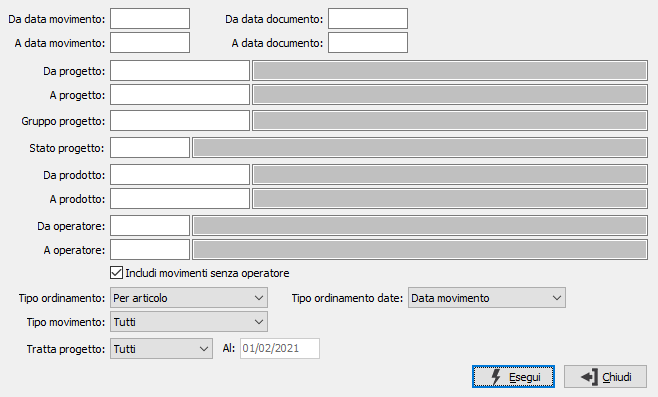

Schede movimenti
Il programma produce il report delle schede dei movimenti relativi a uno o più parametri di selezione forniti dall’utente. Il programma analizza i vari tipi di movimento (materiale, manodopera, lavorazioni, vari).

DA DATA MOVIMENTO: eventuale data movimento da cui deve iniziare l’analisi dei movimenti. Confermando a vuoto, l’analisi inizia con il primo movimento valido.
A DATA MOVIMENTO: eventuale data movimento con cui si desidera terminare l’analisi dei movimenti. Confermando a vuoto, l’analisi si conclude con l'ultimo movimento valido.
DA DATA DOCUMENTO: eventuale data documento da cui deve iniziare l’analisi dei movimenti. Confermando a vuoto, l’analisi inizia con il primo movimento valido.
A DATA DOCUMENTO: eventuale data documento con cui si desidera terminare l’analisi dei movimenti. Confermando a vuoto, l’analisi si conclude con l'ultimo movimento valido.
DA PROGETTO: eventuale codice del progetto, presente in anagrafica progetti, da cui si desidera iniziare la selezione della stampa. Confermando a vuoto, la selezione inizia con il primo progetto valido. Sul campo è attiva la ricerca (F9) sull’anagrafica progetti.
A PROGETTO: eventuale codice del progetto, presente in anagrafica progetti, a cui si desidera terminare la selezione della stampa. Confermando a vuoto, la selezione termina con l’ultimo valido. Sul campo è attiva la ricerca (F9) sull’anagrafica progetti.
GRUPPO PROGETTO: eventuale codice del gruppo progetto, presente in anagrafica Gruppi progetti, per cui si desidera effettuare la selezione della stampa. Sul campo è attiva la ricerca (F9) sulla tabella.
STATO PROGETTO: eventuale codice dello stato progetto, dato presente in anagrafica progetti, per cui si desidera effettuare la selezione dei progetti da analizzare. Sul campo è attiva la ricerca (F9) sulla tabella.
DA PRODOTTO: eventuale codice dell'articolo, presente in anagrafica prodotti, da cui si desidera iniziare la stampa dei movimenti. Confermando a vuoto, la selezione inizia con il primo prodotto valido. Sul campo è attiva la ricerca (F9) sull’anagrafica prodotti.
A PRODOTTO: eventuale codice dell'articolo, presente in anagrafica prodotti, a cui si desidera terminare la stampa dei movimenti. Confermando a vuoto, la selezione termina con l’ultimo valido. Sul campo è attiva la ricerca (F9) sull’anagrafica prodotti.
DA OPERATORE: eventuale codice operatore, presente in anagrafica operatori, da cui si desidera iniziare la stampa dei movimenti, questo campo è attivo solo se si stanno analizzando i movimenti di manodopera o tutti i movimenti. Confermando a vuoto, la selezione inizia con il primo progetto valido. Sul campo è attiva la ricerca (F9) sull’anagrafica progetti.
A OPERATORE: eventuale codice dell’ operatore, presente in anagrafica operatori, a cui si desidera terminare la stampa dei movimenti questo campo è attivo solo se si stanno analizzando i movimenti di manodopera o tutti i movimenti. Confermando a vuoto, la selezione termina con l’ultimo valido. Sul campo è attiva la ricerca (F9) sull’anagrafica progetti.
INCLUDI MOVIMENTI SENZA OPERATORE: spuntando la casella saranno inclusi nell'elaborazione anche i documenti su cui non è specificato o previsto l'operatore.
TIPO ORDINAMENTO: combo box per stabilire il tipo di ordinamento con il quale si intende stampare i dati.
TIPO MOVIMENTO: combo box per definire la tipologia di movimenti che si intende selezionare. Valori ammessi: Tutti; Materiali; Manodopera; Vari; Lavorazioni.
TRATTA PROGETTO: combo box per definire lo stato dei progetti che si intende analizzare. Valori ammessi: Tutti, Aperto, Chiuso oppure Sospeso.
AL: collegata al campo precedente; indica la data in cui il progetto risulta nello stato indicato; il campo è attivo solo per gli stati Aperto e Chiuso.